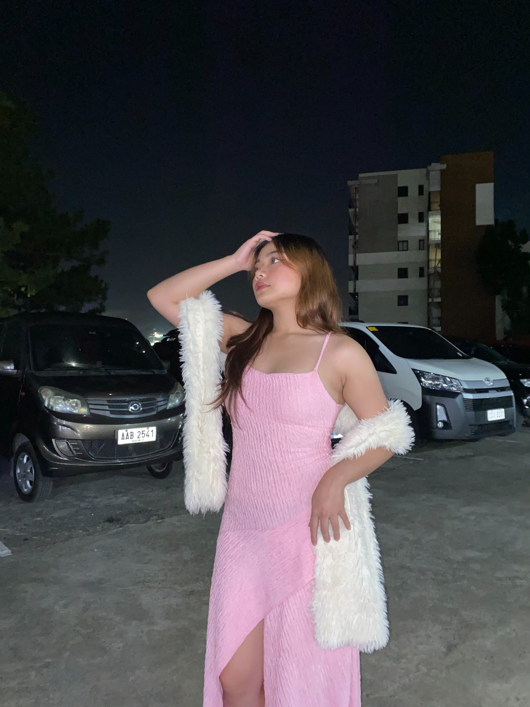

Web development
Creating responsive pages and experimenting with layout, interaction, and visual hierarchy.
INFORMATION TECHNOLOGY STUDENT
Hi, I'm Kianna Ivan Marie Lim — an IT student exploring web development, thoughtful interface design, databases, and systems that make everyday tasks easier.

01 / A LITTLE INTRODUCTION
I enjoy the process of turning an idea into something people can actually use.
For me, information technology is a balance of logic, creativity, and continuous learning.
I'm currently pursuing a Bachelor of Science in Information Technology at Data Center College of the Philippines – Baguio City.
I'm building my foundation in front-end development, programming, database management, and system analysis. I like experimenting with layouts, improving user experiences, and figuring out how systems work behind the scenes.
This portfolio is my little corner of the internet to document what I've learned and the projects I'm working on.
02 / MY TOOLKIT
Technologies I've worked with through coursework and practice. Still growing, one project at a time.
Creating responsive pages and experimenting with layout, interaction, and visual hierarchy.
Practicing programming fundamentals, problem-solving, and structured code.
Working with relational data, database tables, system requirements, and process flows.
03 / SELECTED WORK
A selection of academic and personal projects, presented through custom previews.
A point-of-sale and management system concept for a coffee shop, focused on organizing transactions and supporting day-to-day operations.
A simple database-backed system concept for tracking computer rentals, sales, and related records.
A responsive portfolio built to present my background, technical interests, and work in one place.
✳ Project descriptions are editable starter copy. Update them to match your final implementation and actual contributions.
A NOTE TO SELF
Every bug, every revision, and every new concept is part of the process. I'm here to keep building, keep asking questions, and make things a little better each time.
04 / SAY HELLO
I'm open to learning opportunities, collaboration, and connecting with people who enjoy creating useful things with technology.
Baguio City, Philippines
Remember to replace the sample email and profile links with your own.